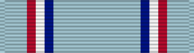

Service awardAFGCM
For enlisted Airmen with exemplary conduct over three years of active service.
Check your eligibility and build your ribbon rackYou earn this by meeting the requirements. No recommendation is needed. If it's missing from your record, current members can have their MPF add it. Veterans can request it from AFPC with a Standard Form 180 and supporting documents. Your commander can decline it for conduct, so check that no disqualification was recorded.
This medal was authorized by Congress on July 6, 1960, with the creation of the other medals of the Air Force. The medal was not created until June 1, 1963 when the Secretary of the Air Force established it.
It is awarded to Air Force enlisted personnel for exemplary conduct during a three-year period of active military service, (or for a one-year period of service during a time of war). Persons awarded this medal must have had character and efficiency ratings of excellent or higher throughout the qualifying period, including time spent in attendance at service schools, and there must have been no convictions of court martial during this period. Air Force personnel who were previously awarded the Army Good Conduct Medal and after June 1, 1963 qualified for the Air Force Good Conduct Medal could wear both medals.
The medal is the same as the Army Good Conduct Medal and was designed by Joseph Kiselewski. On the obverse is an American eagle with wings displayed and inverted, standing on a closed book and a Roman sword. Encircling this are the words Efficiency, Honor, Fidelity at the medal's outer edge. The reverse has a five-pointed star above a blank scroll suitable for engraving the recipient's name and above the star are the words, “For Good” and below the scroll “Conduct.” It is encircled by a wreath of laurel and oak leaves.
The ribbon is predominantly light blue with a thin stripe of dark blue, thin stripe of white, thin stripe of red and a thin stripe of light blue at the edge.
Oak Leaf Cluster
Source: Air Force Good Conduct Medal fact sheet, Air Force's Personnel Center